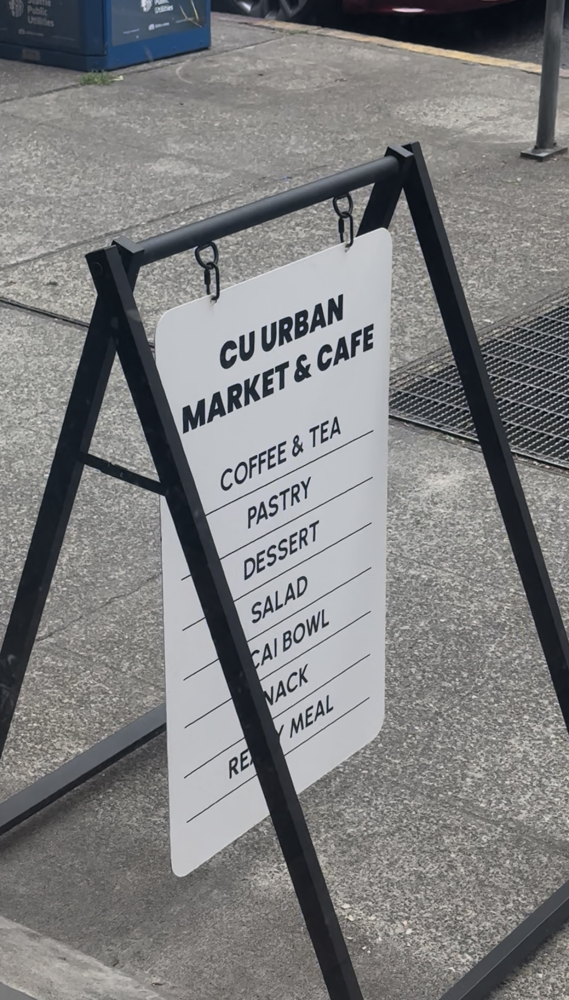
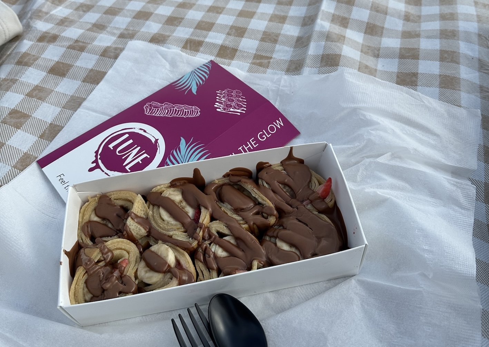
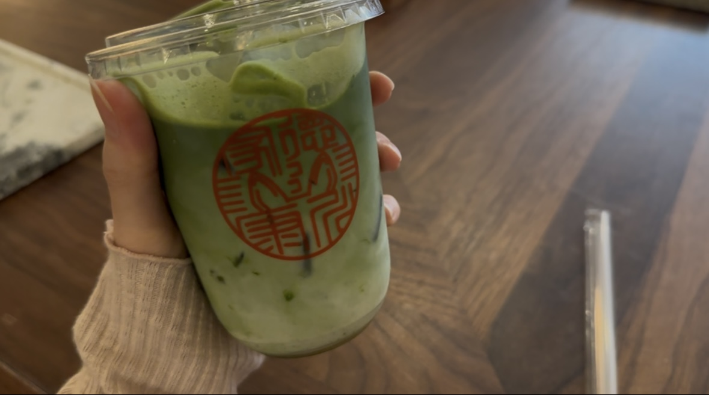

A group of people queue outside a Starbucks in an urban setting, capturing the bustling street life,
Jason Renfrow Photography, . Source:
pexels
The original Starbucks store is one of the most popular places to visit in Seattle. Visitors can enjoy
special drinks available only at this location and purchase merchandise such as tumblers and mugs. Since
it is located near Pike Place Market, it is also very easy to visit while exploring the area. It is
definitely one of the must-visit spots in Seattle, so don’t forget to take a photo with your drink!
Pagasus Coffee
Cozy coffee shop with ivy-clad facade, warm ambiance on a bright fall day, Leandro,
. Source:
pexels
Pegasus Coffee is a cozy cafe known for its charming exterior covered with ivy. After taking a ferry
from Seattle for about 30-40 minutes, you can find Pegasus Coffee located on Bainbridge Island. Even
without a car, the cafe is easy to visit by using public transportation and walking. Many visitors enjoy
relaxing here with coffee and pastries while taking a break from the busy city. Taking a ferry,
visiting a beautiful cafe, and enjoying nature altogether could make the perfect day trip or weekend
plan!
CU urban market & cafe

Signboard outside CU Urban Market & Cafe listing coffee, tea, pastries, desserts, and other menu
items., Personal photograph by Yubeen Choi,
.
CU offers a wide variety of drinks, including coffee, cream coffee, non-coffee drinks, and smoothies.
The cafe also has shelves with ready-to-eat foods and pastries, making it a great place for a quick meal
or snack. I personally really enjoy the smoothies here, and I would honestly say that it was one of the
best smoothies I have had in Seattle.
Lune Cafe

Chocolate-drizzled strawberry crepes served in a white box on an outdoor mat., Personal photograph by
Yubeen Choi,
.
If you enjoy crepes, you may have already heard of Lune Cafe. The cafe has two locations in Seattle and
offers sandwiches, toast, drinks, and desserts. However, I would especially recommend trying their
signature crepes. They come in many different flavors and creative styles, and the crepe shown in the
photo is called “Sushi.” Isn’t that a funny and unique name?
Taz matcha Bar

Iced matcha latte in a clear cup being held by hand over a wooden table., Personal photograph by Yubeen
Choi,
.
I found this cafe by chance after noticing a large crowd gathered while walking by. If you enjoy matcha,
I would highly recommend visiting this place. The cafe has bar-style seating where visitors can watch
the matcha being prepared right in front of them, making the experience enjoyable to watch as well.
There is also a sweetener option, and you can adjust the sweetness level to your preference, but if you
want to experience the rich and authentic flavor of matcha, I would recommend trying the agave sweetener
with the 50% sweetness level!!